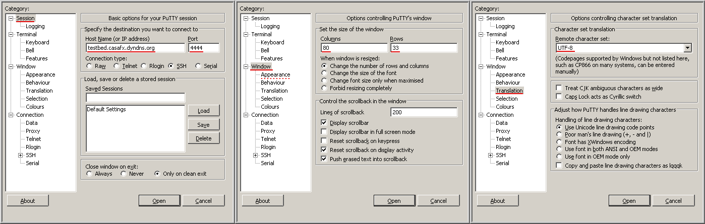

Distributed Deployment of Telematic Services. Testbed.
Félix Alises-Casas.
1 How to remotely connect using SSH
Just run your SSH client using these parameters:
| Host | Port | Proto | Username = Password | Important commands |
|---|---|---|---|---|
| testbed.casafx.dyndns.org | 4444 | SSH-2 | root | screen -c testbed.screenrc |
| Relevant |
We can illustrate the process using well known SSH clients such as those provided by OpenSSH and Putty projects.
OpenSSH client is usually preinstalled in POSIX OS's (GNU/Linux distributions, *BSD, MAC OSX, comercial UNIX's, etc). Putty implementation is not preinstalled in most cases but, additionally to POSIX, supports Windows OS.
1.1 OpenSSH
Please, be sure that your terminal size is at least 80x33. Then, run:
ssh -o "UserKnownHostsFile /dev/null" -o "StrictHostKeyChecking no" -q \ root@testbed.casafx.dyndns.org -p 4444 \ -t -- screen -c testbed.screenrc
1.2 Putty
Please, run:
putty -ssh testbed.casafx.dyndns.org -l root -P 4444 -cs UTF-8 -geometry 80x33
But if using Windows, you probably want to use Putty graphical interface by double-clicking on putty.exe. In that case fill in "Session", "Window" and "Translation" categories as shown below. Then press "Open" button:

Putty graphical configuration. Note that there is also an "Appearance" category, in case you need to increase font size.
… either way, when logged-in, please run:
screen -c testbed.screenrc
2 Tips
After logged-in, as we have mentioned, you could run screen -c testbed.screenrc. It launches a GNU Screen session that points you to a general README file. This file introduce you the deployment as well as give you indications about how to "play" it in a secondary screen where an interactive shell is loaded. During your playing, Relevant command is available and is able to remind you which are the interesting files to read.
Therefore, our infraestructure is explained by several text resources that constitute different entry points to aspects of our deployment. These available resources are: html files filled with text as well as tables, diagrams or flowcharts; and ttyrec video demostrations. Ttyrec videos give you an idea of interesting commands to explore by imitation. See README file as explained.
Enjoy.